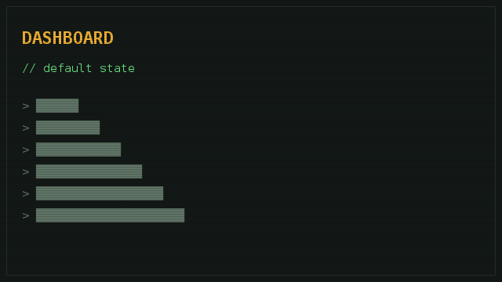

PAGE // page-0003
| URL | https://portal.acme.test/dashboard |
|---|---|
| Title | Dashboard |
| Method | GET |
| Status | 200 |
| Content-Type | text/html |
| Discovery source | HTTP redirect (302 redirect from /session) |
| First seen | 2026-09-24 19:51:56 |
| Last seen | 2026-09-24 19:51:56 |
DISCOVERED THROUGH
- https://portal.acme.test/login → discovery (302 redirect from /session)
- https://portal.acme.test/login → redirect (302 after successful auth)
VISUAL STATES

INTERACTIONS
| Action | Observed behavior | Request |
|---|---|---|
| Clicked the account dropdown | A menu with Profile / Settings / Admin appeared | — |
FORMS
- GET /search 1 params
LINKS
| Text | Destination | Type |
|---|---|---|
| Profile | /dashboard/profile | anchor |
| Settings | https://portal.acme.test/dashboard/settings | anchor |
| Admin | https://portal.acme.test/admin | anchor |
| searchForm | /search | form-action |
RESOURCES
- JavaScript /js/app.js
SOURCE
source/page-0003-dashboard.htmlDOWNLOAD ORIGINAL
<html><head><title>Dashboard</title><script src=/js/app.js></script></head><body><nav><a href=/dashboard/profile>Profile</a><a href=/dashboard/settings>Settings</a><a href=/admin>Admin</a></nav><form id=searchForm action=/search method=get><input name=q type=text></form></body></html>NOTES & OBSERVATIONS
- TODO Check whether /admin is reachable without the admin role. 2026-09-24 19:51:57